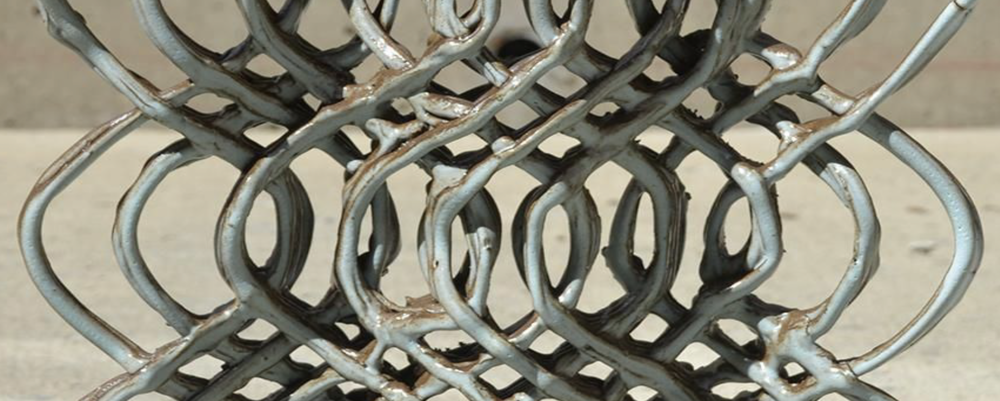

I worked on this project with my friends Howie, Robert, Shray, Tory at CMU's DFAB Lab under supervision of Professor Bidgoli.
In this project, we wanted to explore how robotics can be used in the creative process, specifically in its design implications and applications in facade systems. We are specifically interested in using clay as the material. We learned that clay prints can change significantly before, during, and after the 3D printing process, due to the malleability of the material and the environmental conditions in the drying process. Thus, one must reconsider the precision they can really achieve with these clay components, especially in an aggregate assembly. One interesting opportunity is that the extrusion of clay leaves visible traces on the surface, resulting in an unexpected expression. We will study the different features of clay, and how different settings will make the design outcome unique, The project will also explore printing on non-linear surface with introduction of new materials into the printing process. We will study how clay react to different surfaces, and how printing on non-linear surface differs from traditional surfaces. We will also create new ways to connect wood and clay.
The robot we used is the ABB IRB 4400 with a custom-made suction tube that emits clay. The tube has a motor that connected to an external outlet, and the speed of the extrusion needs to be adjusted by manually adjusting the motor.

Applying these rules, the nodes will expand to different configurations. And the next step is to turn them in to 3D.

To do this, I decided represent each node as a block, and the edges represent the direction to put the next block. And a grey-red edge represents a level change. Hence, the maze will start building from the highest block, and gradually go down from the center. Merging levels seamlessly was no small feat. A maze spread across dimensions required transitions - stairs. To adeptly place these stairs, connecting the maze's multiple layers, I turned to the Randomized Prim's Algorithm. This would add stairs to ensure there's at least one path from source to destination, and also add in random stairs on other routes. Beyond mere placement, this algorithm was instrumental in guaranteeing a clear, uninterrupted route from inception to conclusion.

It's already starting to have the vibe of Sean C Jackson's mazes!
But where's the fun without obstacles? A city, even a maze-like one, teems with life and structures. Channeling this essence, I seeded the paths with trees, bushes, and houses. These weren't mere decorative additions; they were strategic blockers, upping the maze's complexity. An and a flag are added to represent the start and end of the maze. The solution path is shown in red.

The algo can generate mazes on different scales. I rendered the images in this white monotone color for now because they really bring out the rhythm of the maze. I will add in colors and handdrawing-textures in the future when I have more time to work on this project (hopefully)🤐️

Iteration = 10

Iteration = 20

Iteration = 40